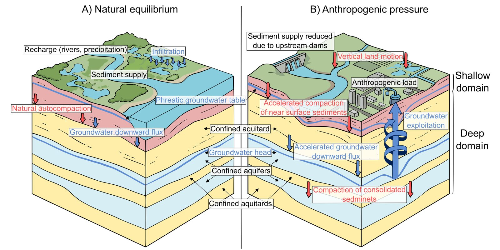

Numerical modelling · Mekong Delta
Coupling shallow and deep compaction
Delta subsidence has two main components: natural compaction of young Holocene sediments and drainage-induced compaction from groundwater pumping. They are usually modelled separately, which misestimates both the components and the total.
During a three-month internship at the University of Padua I developed a coupling between NATSUB3D (shallow, sedimentation-driven compaction) and iMOD (groundwater flow and deep aquifer compaction), with an exchange of hydrological responses between the two models. On a theoretical delta setup, deep pumping drives extra downward flow that forces shallow compaction.
0.180 → 0.251 mmax. total compaction, independent vs coupled
0.017 → 0.092 mmax. shallow compaction
